eAuction - Buyer/Supplier JourneysMahendra Kumar
Buyer Journey: The screen that the buyer will use to monitor the auction after the auction has been created and some suppliers have already submitted their offer(s). The screen should contain all the information that the buyer would need and all the actions that the buyer could perform.
Some of the key entities: best bid (all items & by item) by savings and amount, time left, # of suppliers and bids by suppliers, ranks, extend or close auction, connect with supplier(s), view trend, inform stakeholders, alerts.
Supplier Journey: The Screen used by the supplier to take part in this auction. As above, the screen should contain all the information that the supplier would need and all the actions that the supplier could perform
Some of the key entities: Current bid, best bid, time left, rank, update bid, connect with buyer, alerts & notifications.
Company ABC is planning to buy the following items – a. 100 laptops (4GB memory, 1 TB HDD)b. 100 laptop bagsc. 2000 Desktops (8GB memory, 1 TB HDD, 15” LCD Monitor)d. 3 years Warranty for the Desktops onlyABC’s Purchasing Manager, Mr. Buyer has created an eAuction using an online auction application and has invited Supplier X, Supplier Y & Supplier Z to participate in the auction.
The eAuction application allows ABC to create an auction online with all the required information. Suppliers can log in online and provide their offers and the buyer can see all the offers from his phone and finally decide on the supplier to award.
Design two responsive web screens / journeys (part of the eAuction Web application) – one for the buyer (Mr. Buyer) and one for the Supplier X.
Wireframes for both the journeys – visual designs not needed; though interactions will help. The screens should be intuitive and self-explanatory and descriptions / notes are not required. The web application should be responsive and both Mr Buyer and Supplier X should be able to open and user the application using a Tablet or a Phablet.
Wow! — Literally, this is what I told myself after going through this design challenge! I was actually puzzled, completely clueless mainly because I had very very little knowledge (got to stumble on eBay during some product search, long time ago) about Auction, in general! After having some smiles on my face and staring at the challenge, I felt like this is going to be an interesting time on learning something new at this moment! I was excited!
As the goal was specific on few requirements for this assignment, I started to break it down and prepare a list of parameters for both the personas, Mr. Buyer and Supplier X, for the given scenario. This helped me to get started on my research part — I primarly used Secondary Reasearch (mostly internet) to gain knowledge and gather pointers around those parameters that were necessary with respect to the main actors (users) in the challenge!
Since there were few key tasks highlighted as part of the respective user's journey, though it was not required to be covered as part of this assignment, it was important to have enough knowledge about it. Because, those details were among those important elements that need to be positioned appropriately for respective user journeys in their respective screens!
At a moment, I felt like I had gone so deep — actually I was enjoying through out reading and making notes, bookmarks for reference and so on, I didn't realised that I was spending way too much time on research for this assignment! Hence I made a hard stop and tried to evaluate about the necessary details to get started on next step in the process - the concept/ideas. I felt very confident about research details that I gathered on get going ahead!
With the bunch of healthy knowledge gained through the research for the assignment, I started my concept exploration using one of my favorite tools — pen/pencil and paper medium. I always depend on this medium, because it is easy, convenient and quick to shape the concepts and evaluate for possible solutions for the problem. Some of the photographs of my early design as follows:
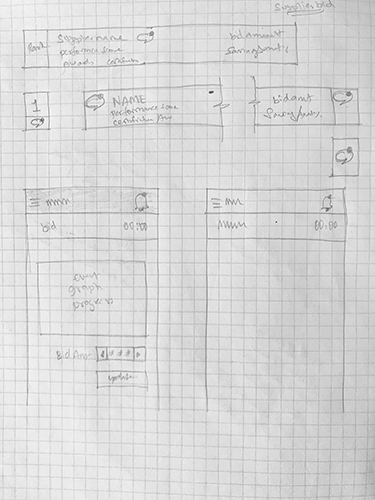 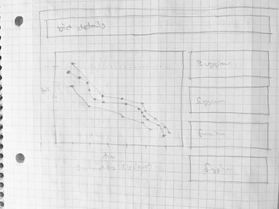 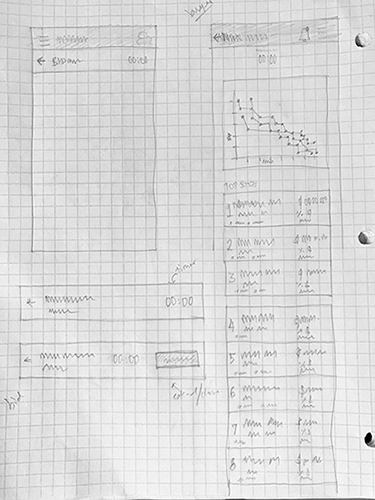After exploring a bunch of ideas, I got a fair idea about the overall design and switch to Sketch tool for wireframe design and developing the concept further!
I will not specify any details about any design element in the designs that I have come up for both the journeys - this will be a test on how intutive the designs are to convey the details inline to the goal.
Having said that, throughout this assignment I have made assumptions based on my knowledge and understanding, mainly through the research, so be caution that you may notice some stupid mistakes! I will be more than happy to know and learn more about them!
For both the journeys, I have deisgned wireframes for desktop, tablet and mobile platforms. And I have used Mac, iPad and iPhone templates to make it easy to reference the visual content while going through the design details in these static designs!
Buyer's Journey Wireframes:
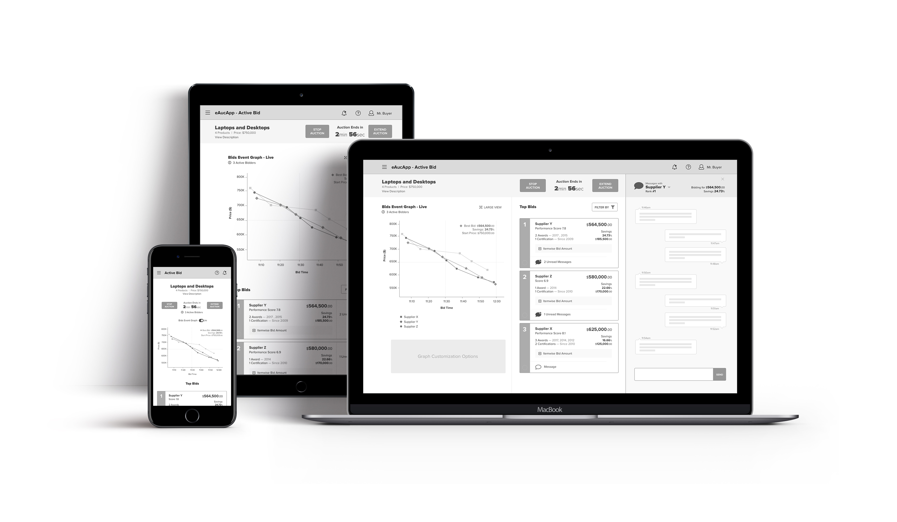B.1) Buyer's Wireframe Design (Desktop)
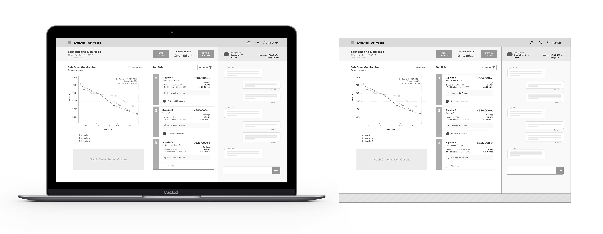B.2) Buyer's Wireframe Design (Tablet - Portriat mode)
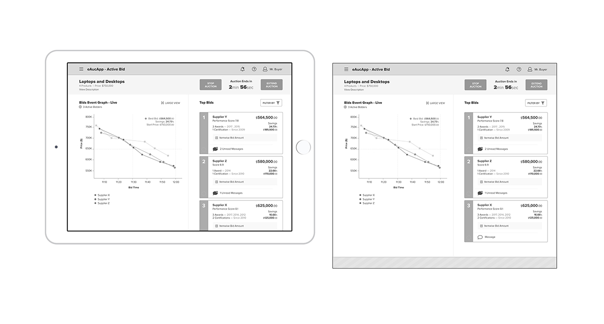B.3) Buyer's Wireframe Design (Tablet - Landscape mode)
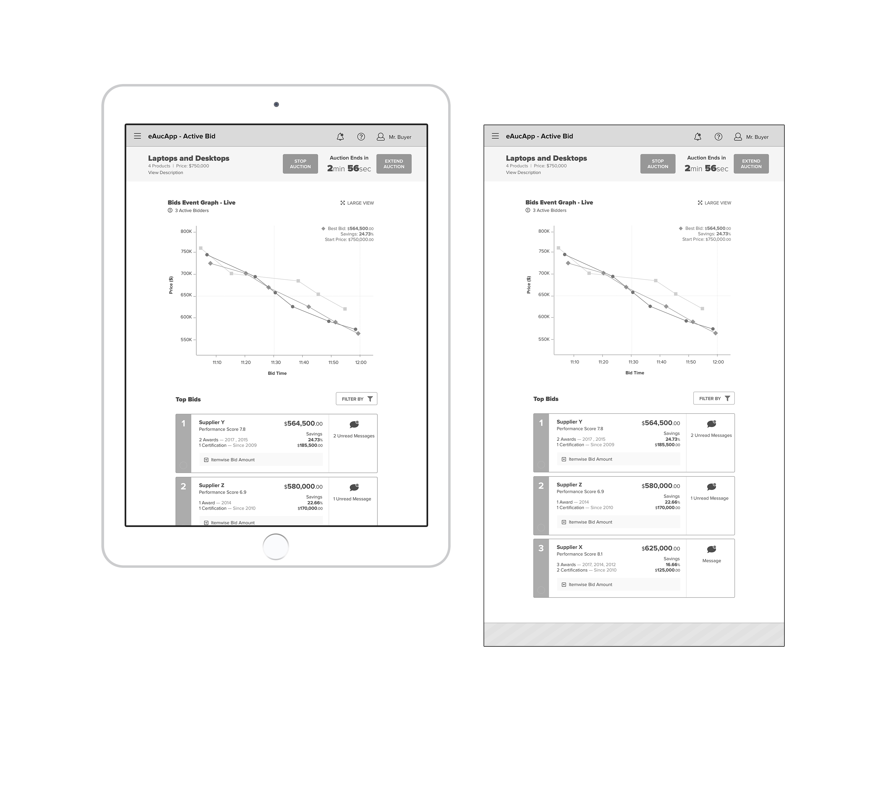B.4) Buyer's Wireframe Design (Mobile)
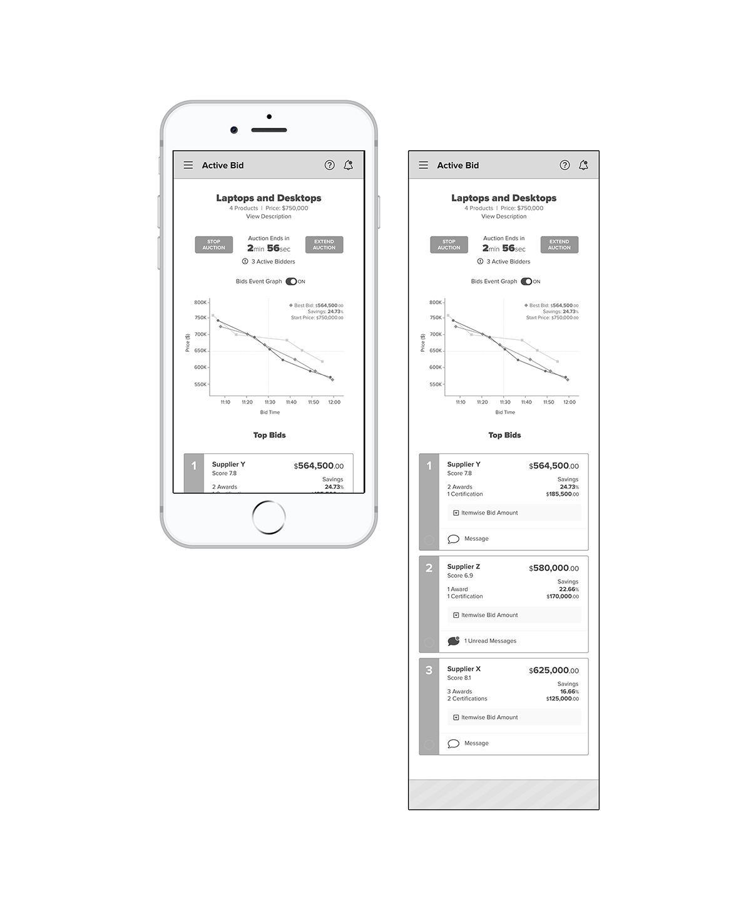B.4) Buyer's Wireframe Design (Mobile - extra)
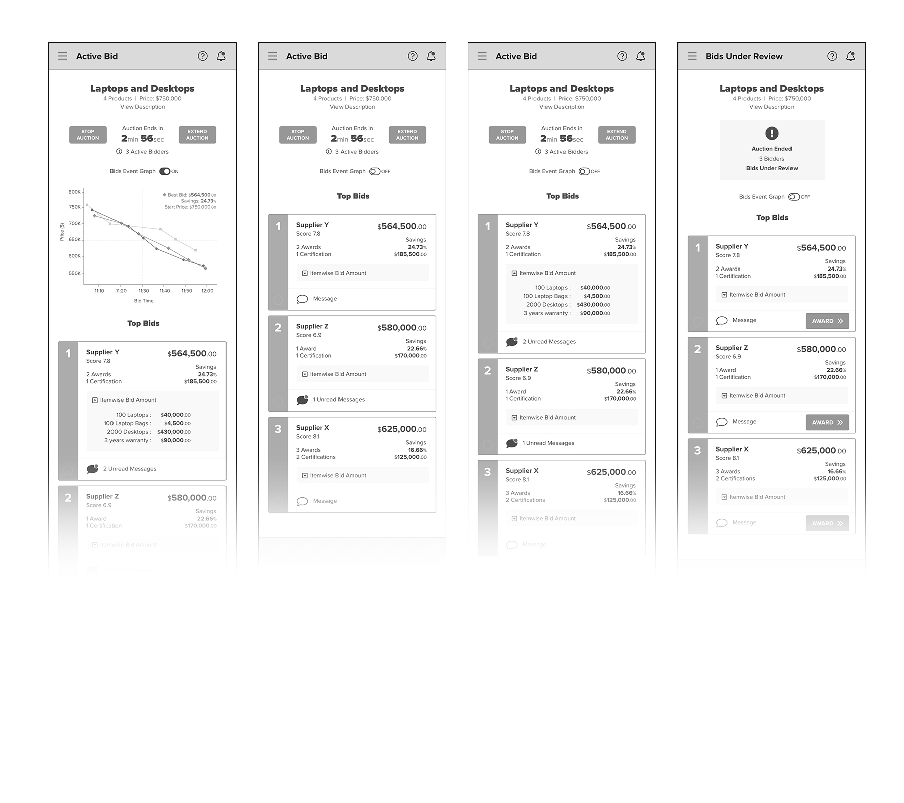Supplier's Journey Wireframes:
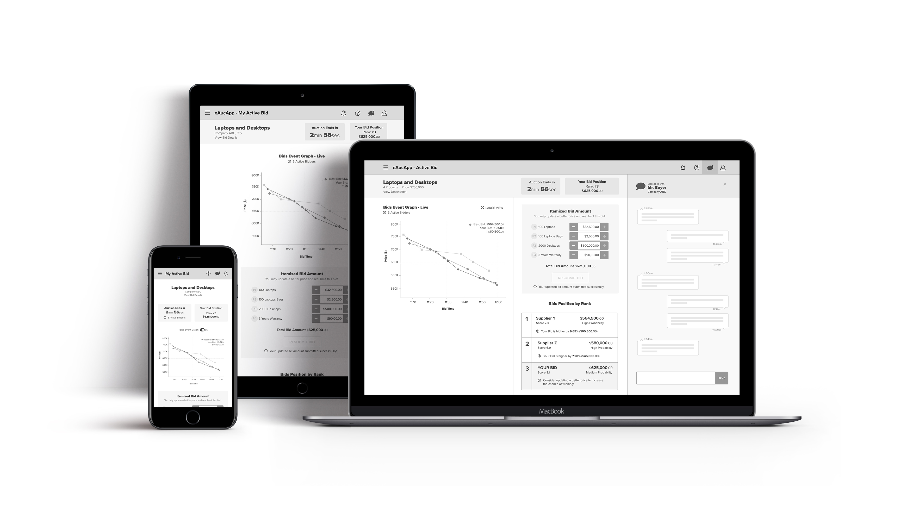S.1) Supplier's Wireframe Design (Desktop)
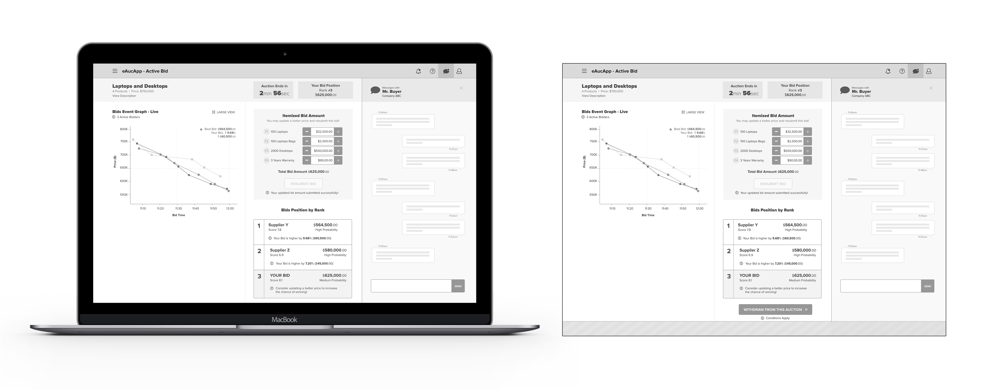S.2) Supplier's Wireframe Design (Tablet - Portriat mode)
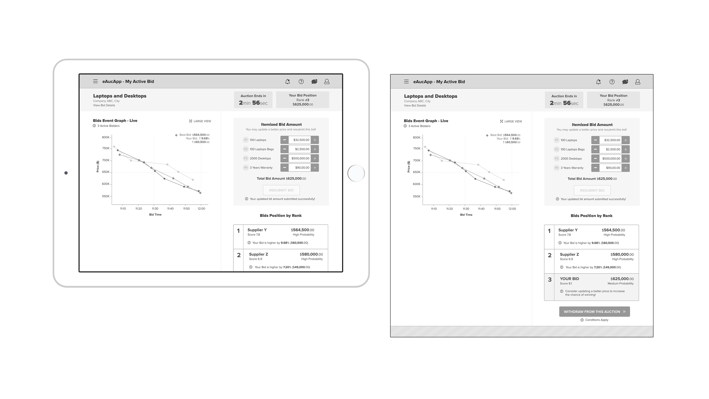S.3) Supplier's Wireframe Design (Tablet - Landscape mode)
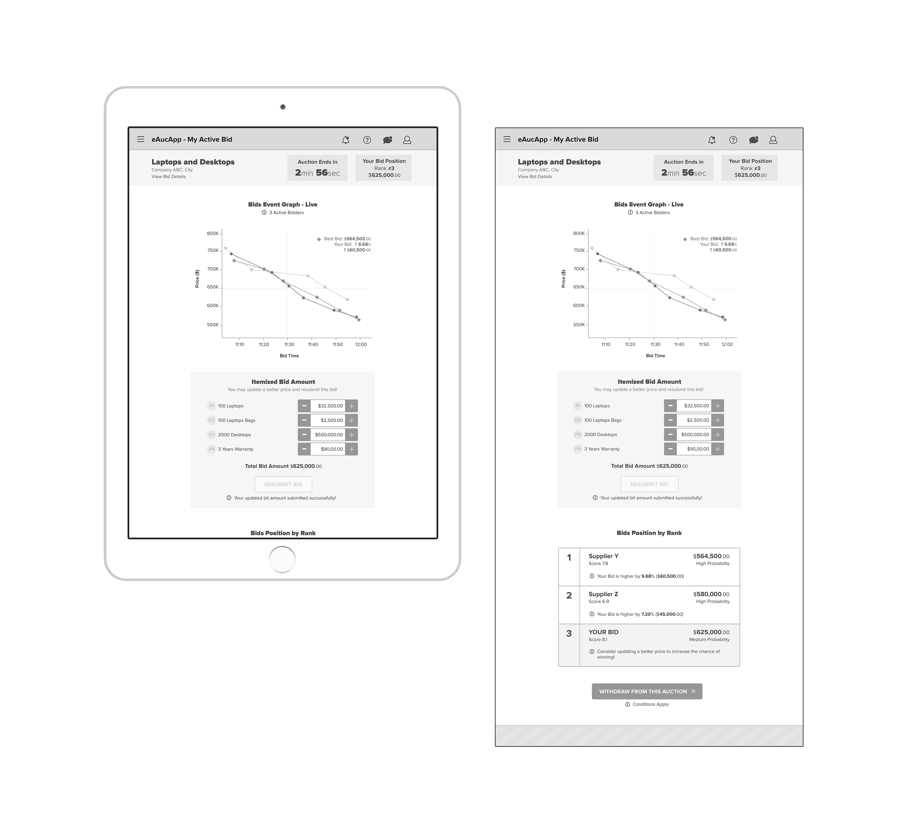S.4) Supplier's Wireframe Design (Mobile)
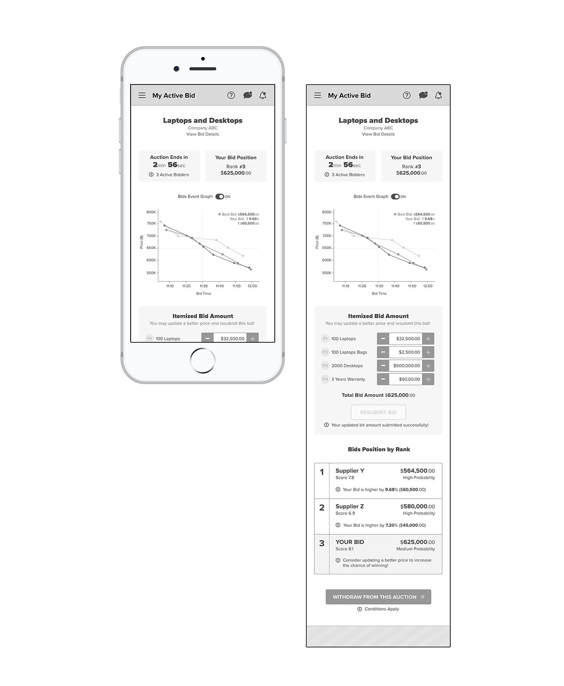S.5) Supplier's Wireframe Design (Mobile - extra)
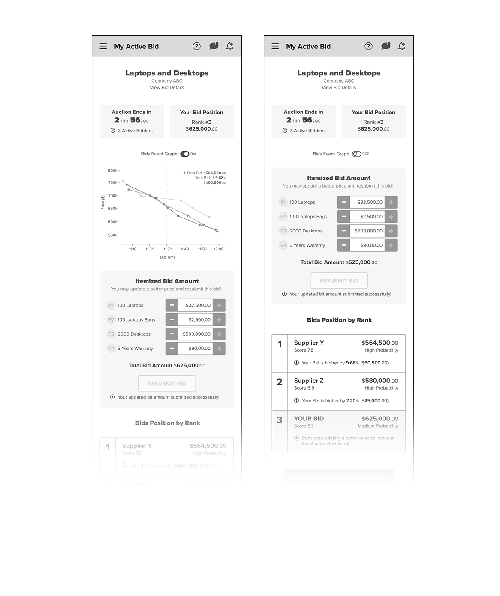I have made a quick static screen prototype (mobile version only) for each Buyer and Supplier journey screens! You may explore the mobile version screens using the below respective links!
Buyer's Screen PrototypeInvision Interactive Prototype Link https://goo.gl/eorVpS
Supplier's Screen PrototypeInvision Interactive Prototype Link https://goo.gl/1NgvRN
*Please explore these prototypes in full screen mode for better experience!
Let's discuss about this responsive design concept for both the user journey screens.
Here, I conclude this interesting design exercise!Thank you so much for exploring my designs this far!